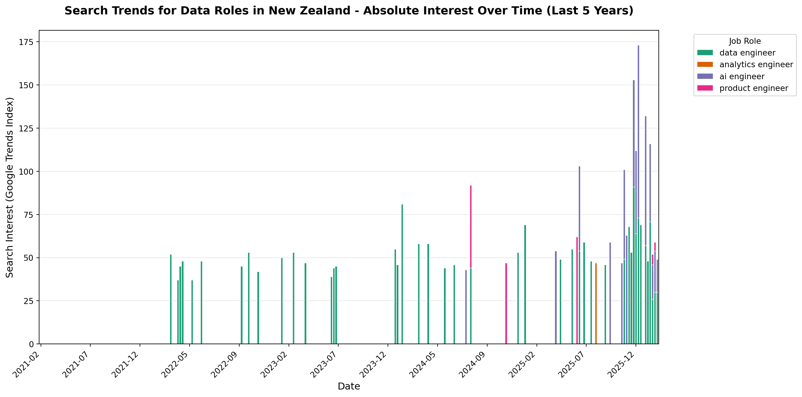

from pytrends.request import TrendReq
import matplotlib.pyplot as plt
import pandas as pd
from datetime import datetime, timedeltaIntroduction
This post explores data job trends in New Zealand using the pytrends library and Quarto.
It is also a simple experiment in the change of working to learn a new tool such as Quarto to create a Python data analysis report supported by coding agent tool, Augment.
pytrends is an unofficial API for Google Trends that allows you to programmatically access Google Trends data. This library is easy to use with no API key required however there are rate limiting limitations.
Setup
Let’s start by importing the libraries:
Data Analysis
Next analyse search trends for different data related job roles in New Zealand:
# Initialize pytrends
pytrends = TrendReq(hl='en-NZ', tz=360)
# Define the time period (last 5 years)
end_date = datetime.now()
start_date = end_date - timedelta(days=365*5)
timeframe = f'{start_date.strftime("%Y-%m-%d")} {end_date.strftime("%Y-%m-%d")}'
# Search terms for data related roles in NZ
search_terms = [ 'data engineer', 'analytics engineer', 'ai engineer', 'product engineer']
# Fetch interest over time
print(f"Fetching Google Trends data for: {search_terms}")
print(f"Time period: {timeframe}")
pytrends.build_payload(kw_list=search_terms, timeframe=timeframe, geo='NZ')
df = pytrends.interest_over_time()
# Remove the 'isPartial' column if it exists
if 'isPartial' in df.columns:
df = df.drop('isPartial', axis=1)
print(f"Data shape: {df.shape}")
print(f"Data range: {df.index.min()} to {df.index.max()}")
# Filter out search terms with all zero values
non_zero_columns = [col for col in df.columns if df[col].sum() > 0]
df_filtered = df[non_zero_columns]
print(f"\nSearch terms with data: {non_zero_columns}")
print(f"Search terms filtered out (no data): {[term for term in search_terms if term not in non_zero_columns]}")
# Define colorblind-friendly palette (ColorBrewer Dark2)
# These colors are distinguishable for people with color blindness
colors = ['#1b9e77', '#d95f02', '#7570b3', '#e7298a', '#66a61e']
term_colors = {term: colors[i % len(colors)] for i, term in enumerate(non_zero_columns)}Fetching Google Trends data for: ['data engineer', 'analytics engineer', 'ai engineer', 'product engineer']
Time period: 2021-02-18 2026-02-17
Data shape: (262, 4)
Data range: 2021-02-14 00:00:00 to 2026-02-15 00:00:00
Search terms with data: ['data engineer', 'analytics engineer', 'ai engineer', 'product engineer']
Search terms filtered out (no data): []# Create stacked bar chart over time with absolute values
fig, ax = plt.subplots(figsize=(14, 7))
# Create the stacked bar chart using raw filtered data (absolute values)
df_filtered.plot(
kind='bar',
stacked=True,
ax=ax,
color=[term_colors[term] for term in non_zero_columns],
width=0.8,
edgecolor='white',
linewidth=0.5
)
ax.set_title('Search Trends for Data Roles in New Zealand - Absolute Interest Over Time (Last 5 Years)',
fontsize=14, fontweight='bold', pad=20)
ax.set_xlabel('Date', fontsize=12)
ax.set_ylabel('Search Interest (Google Trends Index)', fontsize=12)
ax.legend(title='Job Role', bbox_to_anchor=(1.05, 1), loc='upper left', fontsize=10)
ax.grid(True, alpha=0.3, axis='y')
# Format x-axis to show fewer labels for readability
n_ticks = 12 # Show approximately 12 date labels
tick_positions = range(0, len(df_filtered), max(1, len(df_filtered) // n_ticks))
ax.set_xticks(tick_positions)
ax.set_xticklabels([df_filtered.index[i].strftime('%Y-%m') for i in tick_positions], rotation=45, ha='right')
plt.tight_layout()
plt.show()
# Create individual line charts for each job role
fig, axes = plt.subplots(2, 2, figsize=(14, 10))
axes = axes.flatten()
for idx, term in enumerate(non_zero_columns[:4]):
ax = axes[idx]
ax.plot(df_filtered.index, df_filtered[term],
color=term_colors[term], linewidth=2.5, marker='o', markersize=4)
ax.fill_between(df_filtered.index, df_filtered[term], alpha=0.3, color=term_colors[term])
ax.set_title(f'{term.title()}', fontsize=12, fontweight='bold')
ax.set_xlabel('Date', fontsize=10)
ax.set_ylabel('Search Interest (Google Trends Index)', fontsize=10)
ax.grid(True, alpha=0.3)
ax.tick_params(axis='x', rotation=45)
# Hide any unused subplots if fewer than 4 terms
for idx in range(len(non_zero_columns), 4):
axes[idx].set_visible(False)
fig.suptitle('Individual Search Trends for Data Roles in New Zealand (Last 5 Years)',
fontsize=14, fontweight='bold', y=1.00)
plt.tight_layout()
plt.show()
Conclusions
From the charts we can see that there is interest in data and AI related job roles in New Zealand. The search interest for these roles overall has been increasing over the last 5 years. The is consistent demand for data engineer, and increasing interest in product engineer and ai engineer roles. There still doesn’t appear to be comparable uptake in the job role as analytics engineer in New Zealand.